China Social Insurance for Foreign Employees (2026): Operator Playbook for HR and Payroll Teams
Key takeaways
- Social insurance enrollment is generally mandatory for foreign employees in China, subject to city-level handling and treaty-document conditions.
- The biggest risk is not policy awareness, but operational failure: missing documents, late registration, and poor evidence retention.
- This guide is operations-first: SOP, role ownership, timeline, exception playbook, and system control points.
What changed and why this matters
In 2026, the core legal framework remains stable, but practical enforcement quality is increasingly tied to execution consistency. Foreign employers are judged by whether payroll and HR operations can demonstrate timely enrollment decisions, treaty exemption documentation, and clear audit trails.
Daily Operations SOP (role-by-role)
HR Ops (D-10 to D-5)
1. Confirm employee category (local hire / foreign passport / assignment type).
2. Collect onboarding pack: passport, permit data, employment contract, local registration docs.
3. Check treaty-exemption eligibility and required certificates.
Payroll (D-5 to D-2)
1. Validate contribution base logic and city parameters.
2. Set employee social insurance flags in payroll system.
3. Run pre-payroll simulation for contribution and net-pay variance.
Manager / HRBP (D-3 to D-1)
1. Confirm employee communication: expected deductions and rationale.
2. Escalate unresolved doc gaps via exception queue.
Vendor / EOR (Payroll Day + D+2)
1. Execute filing/registration and contribution submission.
2. Return evidence package: filing receipt, amount detail, status note.
Required document checklist
- Passport copy
- Work permit / residence-related employment docs
- Signed labor contract
- City-specific registration forms
- Treaty exemption certificate (if applicable)
- Internal approval record for exemption treatment
Timeline and SLA template
- D-10: employee profile complete
- D-7: treaty check done
- D-5: payroll simulation completed
- D-2: exception closure target ≥95%
- Payroll Day: contribution result confirmed
- D+2: evidence archive complete
Exception handling playbook
- Missing treaty certificate: default to standard contribution path until document accepted.
- Late onboarding data: trigger “provisional contribution” workflow and flag next-cycle correction.
- Employee dispute on deductions: provide calculation sheet + legal basis note + escalation path.
System implementation notes
- Required fields: employee nationality flag, city code, treaty-eligible flag, certificate expiry date.
- Control rule: no payroll finalization if mandatory social insurance fields are null.
- Audit trail: store who changed contribution logic, when, and why.
Common mistakes and prevention
- Mistake: treating treaty exemption as automatic.
Prevention: certificate-first rule + local acceptance proof.
- Mistake: HR and payroll using different city assumptions.
Prevention: single source of parameter truth.
- Mistake: no employee pre-communication.
Prevention: standard bilingual notice before first payroll.
Sources
- Social Insurance Law of the PRC (NPC): http://www.npc.gov.cn/zgrdw/englishnpc/Law/2009-02/20/content_1471106.htm
- Labor Contract Law (NPC): http://www.npc.gov.cn/zgrdw/englishnpc/Law/2007-12/13/content_1384064.htm
- PwC WTS (PRC other taxes): https://taxsummaries.pwc.com/peoples-republic-of-china/individual/other-taxes
Need local employment support in China?
If you need a compliance-first Employer of Record (EOR) partner for hiring, payroll, and risk controls in China, China-Payroll.com can help your team evaluate the right setup.
Image Prompt Pack
Create a 16:9 hero image for article title: 'China Social Insurance for Foreign Employees (2026): Operator Playbook for HR and Payroll Teams'. Scene: finance and payroll operations team reviewing contribution base dashboards in a modern office. Include motifs:…